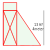
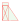
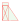
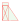
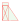
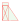
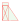
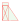

Test


Control Bar
L/G Strut updown test
test
기본(SVG ONLY)
이미지만 표시
이미지 & SVG 동시 표시
개념 전달을 위한 샘플입니다. A/C, stand 및 strut Dimension 은 실제 값과 다릅니다.
마우스로 화면을 끌어 스크롤 하고 스탠드를 끌어 움직일 수 있습니다.


 

 


